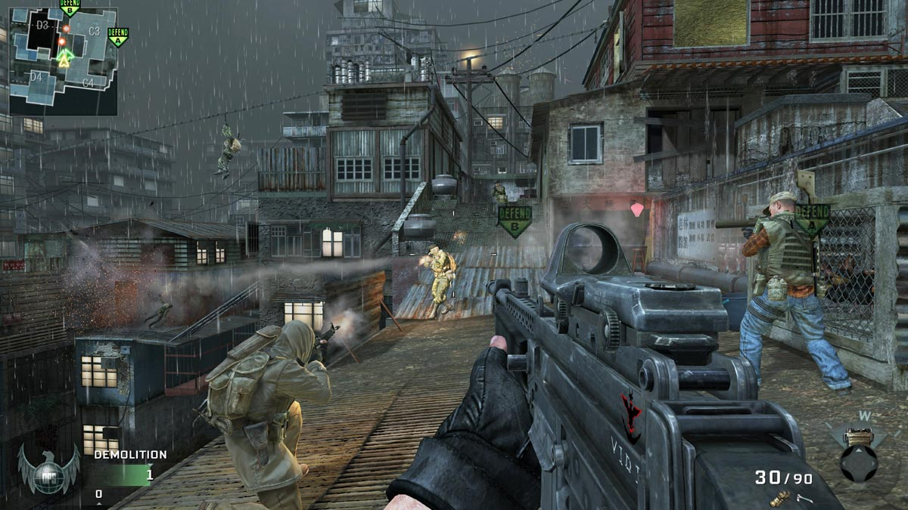
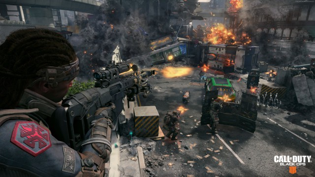
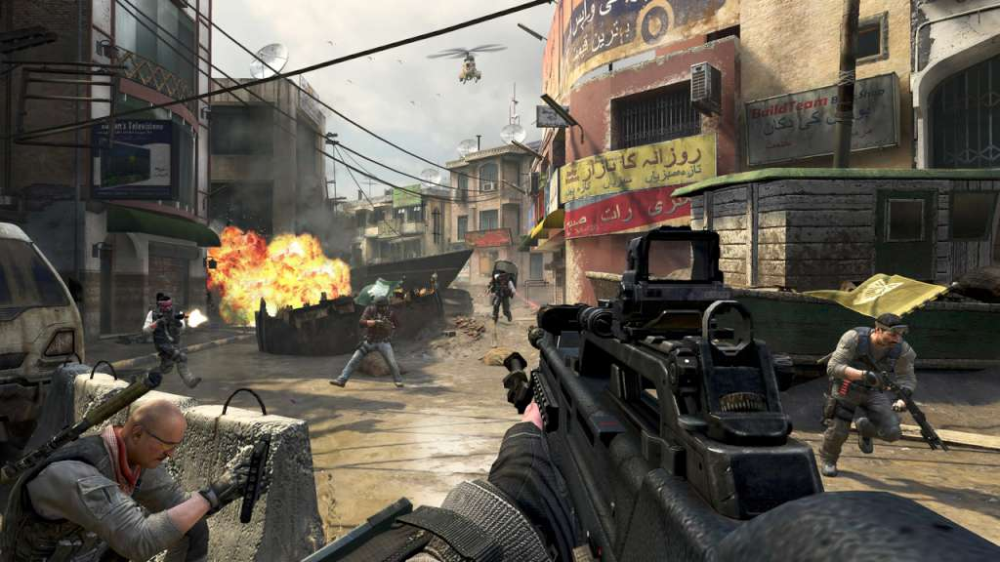

- 
- 
- 


El videojuego, que es el décimo quinto título de la franquicia Call of Duty, Este es el primer juego de la saga que no cuenta con modo campaña, ya que fue reemplazado por el Blackout: Un Battle Royale de 1ª persona. Posee Juego en Liga: Un multijugador adaptando las reglas y modos de la LMC (o CWL).
El desarrollo del juego comenzó poco después del lanzamiento de Black Ops III . Treyarch decidió no crear un modo de campaña para el juego al comienzo del desarrollo, sino que se centró en el aspecto multijugador. Citaron un mayor interés por el modo multijugador y la falta de tiempo de la base de jugadores en el modo campaña.